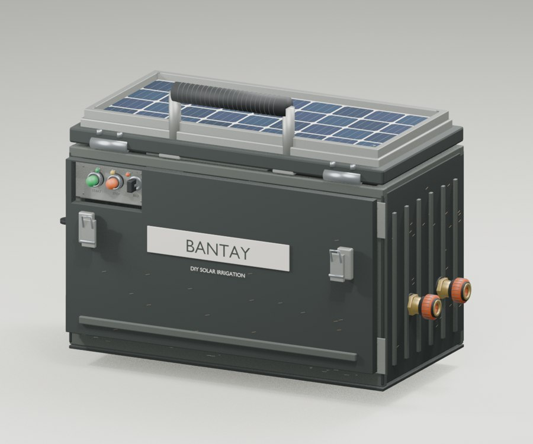

Opening the 3D model…

Opening the 3D model…
Scroll down to separate the parts, and up to rebuild. Drag to rotate. Hold Ctrl while scrolling, pinch, or use the plus and minus keys to zoom. Choose a component in the bottom-right menu to look closer. Escape returns to the whole device.